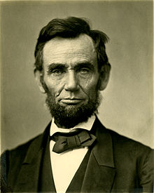
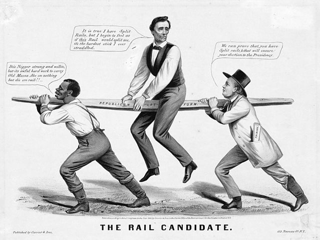

Abraham Lincoln

16th President of United States
- 1809 Born
Lincoln was born in Kentucky on February 12th. This became known as "Lincoln Day."
- 1817 Abraham Lincoln's family settled in Indiana
The Lincoln family settled in Perry County, Indiana. This included his father, mother, sister, and self.
- 1831 Lincoln worked for himself
His work included: boat building, sailing, carpentry, hog sticking, sawmilling, and logging. He also began studying the law. He re-enlisted in the Black Hawk War.
- 1842 Abraham Lincoln Married
Abraham Lincoln married Miss Mary Todd of Kentucky. They had four sons together.
- 1856 Organized the Republican Party
Nominated Vice-President, but was not chosen for its first convention.
- 1861 Inaugurated President
Abraham Lincoln became the 16th President of the United States on March 4th, 1861. Civil War began on April 12th.
- 1863 Emancipation Proclaimed
On January 1st, emancipation was proclaimed. Lincoln delivered a famous speech known as The Gettysburg Address. This occurred on November 19th on the battlefield near Gettysburg, Pennsylvania.
- 1864 Abraham Lincoln Reelected President
Abraham Lincoln reelected on November 8th as the Republican President. It was a unanimous nomination.
- 1865 Inaugurated President for the second term
Lincoln was inaugurated on March 4th for his second presidential term. He was then assassinated on April 14th in Ford's Theater by Wilkes Booth. Booth was slain on April 26th.
- 1922 Lincoln Memorial completed
The Lincoln Memorial was dedicated to Lincoln on May 30th. The building is a constant reminder of Lincoln's significance and valuable contributions to the history of the country. It is located in Washington D.C.

"The Rail Candidate"—Lincoln's 1860 candidacy is depicted as held up by the slavery issue—a slave on the left and party organization on the right.
"Nearly all men can stand adversity, but if you want to test a man's character, give him power."